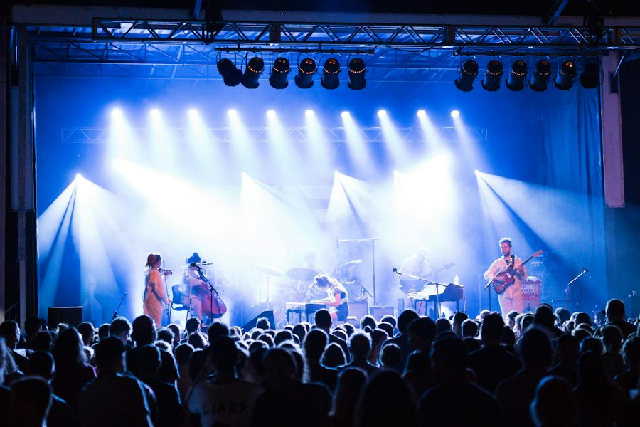

Ficha de sesión · S04 · solo docente
| § | Bloque | Min |
|---|---|---|
| 1 | Warm-up · festival zones | 4 |
| 2 | Vocabulary · Confidence Wager | 7 |
| 3 | Grammar · Same Fact, Three Frames | 10 |
| 4 | Listening · Spot the Lie | 7 |
| 5 | Update Hunt (hunt 12 · update 5 · 12 preguntas 5 · setup 2) | 24 |
| 6 | Wrap-up + checkpoint | 8 |
| Total | 60 |
Warm-up · Festival day: pick your top 3
Teacher notes · §1 Warm-up
Pedagógica
- Cada zona es un mensaje corto de una fuente distinta (app, voluntario, póster, organizadores, seguridad). El alumno lee, elige sus 3 favoritas (★) y justifica en voz alta: 30 s en silencio y luego habla sin leer.
- Repaso activo de Elemental 3 (2 elementos): horarios («opens at») y comparaciones/recomendaciones («the best zone is…»). Sin gramática nueva: solo deja que oigan tus «The app says… / Nora told me…».
- Grupo: cada alumno defiende su top 3 y se cuenta cuántos coinciden. 1:1: tú propones otro top 3 para provocar «Why?». Máx. 4 min.
Engagement
- Pregunta real: «¿A qué evento fuiste y qué cambió a último momento?»
- Declaración de cierre: «Today I can hunt for information and report it.»
Crecimiento
- «In 56 minutes you will hunt for 8 pieces of information and report them in two minutes.»
- Anota qué zonas eligieron: se retoman en el informe del §5.
Vocabulary · 10 festival words

1. Pick a card and bet 1–3 points that you can use the word in YOUR sentence. 2. Scratch the card, then say your sentence (6+ words, no reading). 3. Partner decides: good sentence = +bet · not yet = −bet. Play at least 5 cards.
Teacher notes · §2 Vocabulary
Pedagógica
- Confidence Wager (APUESTA): la apuesta ocurre ANTES de ver la definición. El alumno se compromete («I can use it») y después lo demuestra con una oración suya, no la del ejemplo. Con alumnos que odian equivocarse en público: apuesta escrita y boca abajo.
- Modela cada palabra una vez (alumno repite 2 veces). Pronunciación: schedule /ˈskedʒuːl/, queue /kjuː/, wristband (la w no se pronuncia), shuttle /ˈʃʌtl/.
- Regla de oro del puntaje: solo suman las oraciones PRODUCIDAS y correctas; no cuenta elegir rápido. Mínimo 5 cartas; si hay tiempo, las 10.
- Setup ≤3 min (reglas en pantalla).
Engagement
- Cierra en voz alta: «My final bank is __ points. My best word was __.»
- Pregunta: «¿Qué palabra de la lista usarías en tu próximo viaje o evento?»
Crecimiento
- Estas 10 palabras se reutilizan en el Update Hunt (§5): úsalas en la actualización oral.
- Anota las palabras que apostaron bajo: son las que hay que reciclar en S5.
Grammar · Same fact, three frames
Three ways to pass on the SAME fact
A · A source says
Written sources: app, poster, email, message.
B · A person told me
A person gave YOU the information.
C · A request
A request or instruction: asked us (not) to + verb.
| What you need to pass on | Frame |
|---|---|
| Information from a written source | The app / poster / email says … |
| Information from a person | Nora told me (that) … · Nora didn't tell me … |
| A request or instruction | They asked us to … · They asked us not to … |
The information keeps the same day, time and number. Same fact — different frame because the SOURCE is different.
¿Qué es? Tres marcos para pasar información: says (fuente escrita), told me (una persona te lo dijo) y asked us to (una petición).
¿Cómo se usa? Primero decide QUÉ es: ¿un dato de un texto? ¿un dato de una persona? ¿una petición? Luego elige el marco. El dato (hora, lugar, número) no cambia.
¿Para qué hoy? Para hacer una actualización clara a otra persona: de dónde viene cada cosa y qué hay que hacer.
Cuidado: «said me» y «asked us move» no existen: told me y asked us to move.
Choose the correct form
Same Fact, Three Frames — which frame fits, and WHY?
Frames chosen 0 / 51. Read the situation. 2. Pick the frame (A, B or C). 3. Say the sentence AND one reason out loud: “I choose B because a person told me.” The point comes from the reason, not from guessing.
Teacher notes · §3 Grammar
Pedagógica
- UN solo sistema (reported information básico): hoy no se enseña nada nuevo, se ELIGE entre says / told me / asked us to según la fuente. Explicación docente ≤5 min (el Recap está en pantalla). Practice A es la única parte mecánica.
- Same Fact, Three Frames (RANKING): el mismo dato se dice con tres marcos; el grupo decide cuál corresponde y POR QUÉ. Enseña uso, no forma. Punto por justificación de uso, cero por acertar de suerte.
- Límite de nivel: NO enseñes cambios de tiempo («said it was»), preguntas reportadas ni pasiva. Cada dato se pasa en la misma forma en que llegó.
- Error prioritario: «said me» y «asked us move». Márcalos durante el Update Hunt.
Engagement
- «Before you speak, ask: is it a text, a person or a request?»
- Cierra en voz alta: «My best frame today is __ because __.»
Crecimiento
- Este marco se reutiliza en S5 (They said… but I think we should…).
- Anota los 3 errores más repetidos para el repair de §6.
Listening · Spot the lie
Raj, a festival volunteer coordinator, gives a quick update on the speakers. But THREE details are wrong. Compare what you hear with the programme.
Listen twice. Final audio: MP3 recorded with ElevenLabs.
📋 Saturday programme (official)
Mark each statement
Teacher notes · §4 Listening
Pedagógica
- Spot the Lie (IMPOSTOR): el guion (124 palabras, rango B1 120–200) contiene tres datos que CONTRADICEN el programa visible; el alumno los caza y dice cómo debería sonar. Hablante: Raj (inglés indio, hablante no nativo → cumple ≥1/3 de acentos no nativos). Marca [PARA GRABAR]: sin MP3 suena la voz del navegador.
- Ciclo: (1) leen el programa 30 s; (2) escuchan y marcan Verdadero/Mentira; (3) comprueban; (4) dicen la corrección con la estructura correcta («The programme says… but Raj said…»). Los datos falsos son verificables con lo que el alumno tiene en pantalla.
- Answer key: mentiras → Los Cometas 8:30 (es 9:15) · Luna Rey en Park Stage (es Main Stage) · Gate B (es Gate C). Verdaderos → último shuttle 11:30 · reusable bottle · Café Sol 6:00 Park Stage.
- Cumple: ≥3 elementos de léxico (stage, gate, shuttle, wristband) y las tres formas (says · told me · asked us (not) to) al menos 2 veces sin subrayarlas.
Engagement
- «Which one would YOU have missed without the programme?»
- Cierra en voz alta: «I found __ of 3 lies.»
Crecimiento
- Verificar contra la fuente antes de actuar es la base del Bloque 2 (Clarify).
- Anota quién dijo «The programme says… but Raj said…» sin ayuda.
Update Hunt · Find it, say where it comes from, report it
You and your partner each hold 4 messages from DIFFERENT sources. You need what the other person has.
1 · Ask (“Could you confirm…?” · “What does the app say about…?”). 2 · Report each piece with the right frame: says · told me · asked us to. 3 · Update your boss in 2 minutes.
Group: pairs. Set A = App + Nora. Set B = Tomás + Poster. Don't show your screen! (Groups of 4: two pairs.)
1:1: you use Set A, the teacher uses Set B. Same hunt.
Fill the hunt board: the answer AND the frame
Give your boss a 2-minute update
Your boss (your partner) asks: “What changed? What should we do?” 1. 30 seconds in silence — no writing sentences. 2. Speak for up to 2 minutes without notes. 3. The boss ticks the checkpoint below.
12 questions · always 2 follow-ups

Teacher notes · §5 Update Hunt
Pedagógica
- Update Hunt (checkpoint de S4 del temario; familia COLECCIÓN): cada alumno recoge los 4 datos que no tiene preguntando y escuchando, y al final los junta en una actualización oral de 2 minutos (evidencia del Bloque 1: fuente + punto principal + detalle relevante + acción posible). El catálogo no tiene una dinámica de Speaking de COLECCIÓN: se usa la del temario y se declara.
- Hunt (12 min): 8 mensajes ≤25 palabras en 4 fuentes (App, Nora, Tomás, Póster). Cada alumno busca 4 datos con aclaraciones «Could you confirm…?» y los reporta con el marco correcto. Grupo: parejas (o dos parejas en grupos de 4). 1:1: tú tienes el Set B.
- Update (5 min): 30 s de preparación en silencio y 2 min hablando sin notas; el «jefe» pregunta «What changed? What should we do?». El checkpoint de §6 se marca con evidencia oral.
- Si el mensaje no contiene el dato pedido, el alumno dice «It doesn't say» (no inventar). Respuestas: T1 9:15 (says) · T2 Park Stage (told me) · T3 reusable bottle (asked us) · T4 Gate C (says) · T5 11:30 (told me) · T6 glass bottles (asked us not to) · T7 Hall B (says) · T8 cards only (told me).
- Preguntas (5 min): elige 4–5 de las 12; todas con 2 follow-ups; nunca respuesta de una palabra.
Engagement
- Anuncia el resultado: «__ of 4 facts found, __ of 6 checkpoint points. Hunt complete!»
- «If your boss can act, the update worked.»
Crecimiento
- S8 (Checkpoint dinámico) y S12 (The Information Gap) repiten esta estructura con más fuentes y mensajes más largos.
- Registra: hallazgos, conteo de says/told/asked y puntos del checkpoint.
Wrap-up · Better the second time
Tick what the boss heard in your 2-minute update
✓ Success
↑ Upgrade
✎ Repair
↻ Next use
Write a 4-line update for a real plan today: source · main point · detail · action.
60 seconds · 5 questions
Today I can…

You can hunt for information and report it in two minutes.
Homework: choose ONE real event or trip this week and write a 4-line update for a friend: source · main point · detail · action (use says / told me / asked us to). Next: Session 5.
Teacher notes · §6 Wrap-up
Pedagógica
- Máx. 2 aciertos y 3 correcciones de alto valor (tus anotaciones del Update Hunt). El checkpoint se marca con evidencia oral: 5 de 6 puntos = superado; si no, un segundo intento de 60 s (transferencia con un dato cambiado).
- Tarea: un mensaje real de 4 líneas. Se revisa al inicio de S5.
Engagement
- Declaración final: «Today I can hunt for information, say where it comes from and report it.»
- Compara con §1: «Minute 1: you chose zones. Minute 58: you report facts with the right source.»
Crecimiento
- Registra: tablero de datos, puntos del checkpoint, banco del Wager, mentiras halladas.
- «Next session: They said… but I think we should… — your own opinion after the facts.»